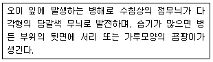
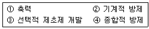

식물보호기사 (2014-05-25 기출문제)
1과목: 식물병리학
1. 보리 겉깜부기병 방제법으로 가장 거리가 먼 것은?
- 무병지에서 채종한 종자 사용
- 종자를 냉수온탕침법으로 처리
- 종자를 침투성 종자소독제로 소독
- 보리 이삭이 필 무렵 석회 황합제 살포
(정답률: 72%)

2. 벼 줄무늬잎마름병을 효율적으로 방제하는 방법이 아닌 것은?
- 저항성 품종 재배
- 애멸구 제거
- 살균제 살포
- 논두렁 잡초 제거
(정답률: 76%)
3. 형광항체법을 이용하는 식물병 진단방법은?
- 핵산분석에 의한 진단
- 이화학적 진단
- 혈청학전 진단
- 생물학적 진단
(정답률: 86%)
4. 우리나라에서 참나무 시들음병을 일으키는 병원균을 매개하는 것으로 알려진 곤충은?
- 북방수염하늘소
- 솔수염하늘소
- 광릉긴나무좀
- 장수풍뎅이
(정답률: 86%)
5. 아밀라리아(Armillaria) 뿌리썩음병균에 의해 나타나는 증상이 아닌 것은?
- 균핵
- 자실체(버섯)
- 근상균사속(뿌리모양의 균사다발)
- 부채꼴 모양의 흰색 균사매트
(정답률: 49%)
6. 토마토에 발생하는 병해 중 비기생성 병해는?
- 겹둥근무늬병
- 궤양병
- 잿빛곰팡이병
- 배꼽썩음병
(정답률: 68%)
7. 배추 노균병균이 만드는 유성포자는?
- 자낭포자
- 담자포자
- 난포자
- 접합포자
(정답률: 63%)
8. 식물바이러스의 특성을 바르게 설명한 것은?
- 식물바이러스는 감자한천배지에서 배양할 수 있다.
- 핵산 단독으로도 감염 및 증식이 가능한 식물바이러스가 있다.
- 식물바이러스의 전염은 매개충에 의해서만 이루어진다.
- 식물바이러스는 전자현미경으로는 관찰할 수 없다.
(정답률: 72%)
9. 식물병의 표징에 해당하는 것은?
- 감자 바이러스의 모자이크 증상
- 벼 도열병의 전형적인 마름모 증상
- 감귤 궤양병의 과일에 나타난 궤양
- 사과나무 부란병의 분생자각
(정답률: 69%)
10. 다음 설명하는 병은?

- 노균병
- 덩굴마름병
- 잿빛곰팡이병
- 흰가루병
(정답률: 74%)
11. 식물병 중 표징을 관찰할 수 없는 경우는?
- 사철나무 그을음병
- 포도나무 잿빛곰팡이병
- 대추나무 빗자루병
- 사과나무 탄저병
(정답률: 84%)
12. 코흐의 원칙에 대한 설명으로 틀린 것은?
- 병의 원인을 증명하기 위해 사용되는 원칙이다.
- 4단계의 규칙으로 구성되었다.
- 모든 식물병원체에 적용할 수 있다.
- 식물병 뿐만 아니라, 동물병에도 적용될 수 있다.
(정답률: 82%)
13. 코흐의 원칙으로 식물병원체임을 증명할 수 있는 병해는?
- 고추 탄저병
- 감자 바이러스병
- 딸기 흰가루병
- 오이 노균병
(정답률: 62%)
14. 벼 흰잎마름병의 발생과 전파에 가장 좋은 환경조건은?
- 규산 과용
- 이상 건조
- 태풍과 침수
- 이상 저온
(정답률: 89%)
15. 이병된 식물체를 가축이 먹으면 해로운 병은?
- 콩 자줏빛무늬병
- 보리 붉은곰팡이병
- 벼 도열병
- 배추 모자이크병
(정답률: 92%)
16. 중합효소연쇄반응(PCR)법은 무엇을 증폭시키는 것인가?
- 탄수화물
- 단백질
- DNA
- RNA
(정답률: 78%)
17. 벼 도열병균의 레이스(race)를 구분할 때 사용하는 판별품종이 아닌 것은?
- 인도계(T) 품종군
- 일본계(N) 품종군
- 필리핀계(R) 품종군
- 중국계(C) 품종군
(정답률: 80%)
18. 무가온 시설재배에서 발생하는 병해중 가장 낮은 온도에서 발생하는 병은?
- 균핵병
- 노균병
- 흰가루병
- 역병
(정답률: 54%)
19. 제한효소를 사용하여 DNA 특정 염기부위를 잘라 DNA절편 다양성을 통해 병원체를 동정하는 진단과 관련있는 용어는?
- TEM
- RFLP
- LEM
- PCR
(정답률: 79%)
20. 동물 유전자에 의해 코딩되지만 식물체 내에서 식물에 의해 생성되는 항체는?
- Plantibody
- Microbody
- X-body
- Chromobody
(정답률: 77%)
2과목: 농림해충학
21. 곤충 목으로 주로 유익한 곤충(천적)들이 속해 있는 목에 해당되지 않는 것은?
- 풀잠자리목
- 딱정벌레목
- 매미목
- 벌목
(정답률: 73%)
22. 종내 개체간 통신용 소리의 목적이 아닌 것은?
- 교미
- 구애
- 경보
- 자기방어
(정답률: 77%)
23. 곤충학은 다른 학문의 분야에도 영향을 미치는데, 초파리는 어느 학문의 발전에 특히 크게 기여 하였는가?
- 화학
- 생태학
- 유전학
- 물리학
(정답률: 86%)
24. 키틴(Chitin)을 구성하는 주 단위체는?
- Acetylgalactosamine
- N-Acetylglucosamine
- Galactosamine
- Procuticle
(정답률: 66%)
25. 곤충의 특징이 아닌 것은?
- 몸이 머리, 가슴, 배 3 부분으로 되어 있다.
- 4쌍의 다리를 가지고 있다.
- 겹눈과 홑눈이 있다.
- 대개 변태를 한다.
(정답률: 89%)
26. 벼물바구미의 월동태는?
- 알
- 유충
- 번데기
- 성충
(정답률: 67%)
27. 일반적으로 곤충이 가장 강한 주광성을 나타내는 파장 범위는?
- 230~300nm
- 330~400nm
- 430~500nm
- 530~650nm
(정답률: 64%)
28. 근육 부착을 위한 머리내 골격 구조를 무엇이라 하는가?
- 봉합선(suture)
- 합체절(tagma)
- 막상골(tentorium)
- 두개(cranium)
(정답률: 73%)
29. 곤충이 갖는 살충제 저항성 기작의 원인이 아닌 것은?
- 농약으로부터 기피하는 행동
- 해독효소 활성 감소
- 빠른 배설 생리기작
- 표피층 두께 증가
(정답률: 77%)
30. 성충과 유충이 모두 잎을 가해하는 해충은?
- 오리나무잎벌레
- 미국흰불나방
- 솔잎혹파리
- 박쥐나방
(정답률: 81%)
31. 곤충의 체벽(외골격)을 구성하는 요소들을 바깥쪽부터 순서대로 바르게 나열한것은?
- 상큐티클-외큐티클-표피-기저막
- 외큐티클-표피-기저막-상큐티클
- 상큐티클-외큐티클-기저막-표피
- 상큐티클-기저막-표피-외큐티클
(정답률: 70%)
32. 최근 우리나라 소나무류에 피해를 주고 있는 소나무재선충병의 매개충으로 나열된것은?
- 솔수염하늘소, 북방수염하늘소
- 북방수염하늘소, 알락하늘소
- 알락하늘소, 털두꺼비하늘소
- 솔수염하늘소, 남색하늘소
(정답률: 89%)
33. 해충의 발생예찰 방법이 아닌 것은?
- 통계적 예찰법
- 야외조사 및 관찰 예찰법
- 시뮬레이션 예찰법
- 피해사정 예찰법
(정답률: 73%)
34. 성충과 약충이 가해하며 벼의 오갈병을 매개하는 해충은?
- 벼멸구
- 애멸구
- 흰등멸구
- 끝동매미충
(정답률: 78%)
35. 등에는 어느 목에 속하는 곤충인가?
- 나비목
- 파리목
- 매미목
- 날도래목
(정답률: 63%)
36. 온난화로 인하여 일부 월동하는 사례가 있으나, 일반적으로 우리나라에 비래 하지만 월동하지는 않는 것으로 분류되는 해충으로 나열된 것은?
- ㉠, ㉡
- ㉠, ㉢
- ㉠, ㉣
- ㉠, ㉢, ㉣
(정답률: 68%)
37. 1년에 1회 발생하는 해충은?
- 벼물바구미
- 조명나방
- 감자나방
- 미국흰불나방
(정답률: 71%)
38. 파리의 날개는 몸의 어느 부위에 부착되어 있는가?
- 등판
- 앞가슴
- 가운데가슴
- 뒷가슴
(정답률: 75%)
39. 소나무의 중요 해충의 하나인 소나무좀의 학명은?
- Baris depianata
- Agelastica coerulea
- Rhynocoris leucospilus
- Tomicus piniperda
(정답률: 62%)
40. 가해 양식이 나머지 셋과 다른 해충은?
- 조록나무혹진딧물
- 솔껍질깍지벌레
- 버즘나무방패벌레
- 미국흰불나방
(정답률: 65%)
3과목: 재배학원론
41. 작물의 내동성을 증대시키는 생리적 요인으로 틀린 것은?
- 원형질의 수분투과성이 크다
- 세포의 수분함량이 높아 자유수가 많다.
- 원형질의 친수성 콜로이드가 많다.
- 당분함량이 많다.
(정답률: 66%)
42. 단일성 식물에 해당하는 것은?
- 시금치, 보리
- 벼, 토마토
- 고추, 딸기
- 코스모스, 나팔꽃
(정답률: 67%)
43. 작물의 내건성에 대한 설명으로 옳은 것은?
- 내건성이 큰 작물의 뿌리가 표층에 많이 분포한다.
- 내건성이 큰 작물은 왜소하고 잎이 작다.
- 내건성이 큰 작물은 세포액의 삼투압이 낮다.
- 내건성이 큰 작물은 세포가 크다.
(정답률: 72%)
44. 용도에 따른 작물의 분류법에서 식용작물, 공예작물, 사료작물에 모두 속하는 화본과 작물은?
- 벼
- 콩
- 감자
- 옥수수
(정답률: 79%)
45. 질산암모늄(NH4NO3)의 질소유효성분은? (원자량 N=14, H=1, O=16)
- 18%
- 28%
- 35%
- 46%
(정답률: 57%)
46. 공기중 습도가 높으면 어떤 현상이 일어나겠는가?
- 광합성이 더욱 왕성히 이루어진다.
- 숨구멍이 폐쇄되어 광합성이 크게 감퇴된다.
- 뿌리의 수분, 양분의 흡수력이 왕성해진다.
- 증산작용이 왕성해진다.
(정답률: 77%)
47. 다음 중 적산온도가 가장 낮은 것은?
- 벼
- 감자
- 콩
- 수수
(정답률: 43%)
48. 다음 중 연작의 해가 가장 적은 작물은?
- 옥수수
- 수박
- 토마토
- 인삼
(정답률: 75%)
49. 광량이 적고 산소분압이 높은 상태에서 나타나는 C3식물의 생리작용은?
- 착색이 촉진된다.
- 광호흡이 증대한다.
- 엽록소 형성이 촉진된다.
- C/N율이 높아진다.
(정답률: 64%)
50. 작물이 주로 이용하는 토양 수분은?
- 흡습수
- 모관수
- 지하수
- 결합수
(정답률: 76%)
51. 토성에 대한 설명으로 옳은 것은?
- 토성은 2mm 이상 크기의 입자 함량에 가장 크게 영향을 받는다.
- 사질식토보다는 경식토가 미사함량이 낮다.
- 양토는 사질식보다 물빠짐이 좋다.
- 식양토는 사질식토보다 점토 함량이 높다.
(정답률: 45%)
52. 침관수해에 가장 크게 피해를 받기 쉬운 조건은?
- 청수와 정체수
- 탁수와 정체수
- 탁수와 유수
- 청수와 유수
(정답률: 84%)
53. 발아에 광선이 필요하지 않는 작물은?
- 상추
- 금어초
- 담배
- 호박
(정답률: 59%)
54. 열해의 원인으로 가장 거리가 먼 것은?
- 증산과다
- 철분의 침전
- 암모니아 축적
- 유기물의 과잉집적
(정답률: 59%)
55. 생리적 염기성 비료는?
- 황산칼륨
- 과인산석회
- 염화칼륨
- 용성인비
(정답률: 73%)
56. 기계이앙 벼 재배용 상자육묘에서 상토의 최적 pH는?
- 3.5~4.5
- 4.5~5.5
- 5.5~6.5
- 7.5~8.5
(정답률: 67%)
57. 지온상승에 효과가 있는 멀칭필름은?
- 투명필름
- 흑색필름
- 녹색필름
- 황색필름
(정답률: 70%)
58. 다음 용어에 대한 설명으로 틀린 것은?
- C/N율 : 식물체의 탄수화물과 질소의 비율이다.
- G-D균형 : 식물의 생육이나 성숙은 분화와 균형에 의하여 지배된다는 것이다.
- T/R율 : 신장생장에 대한 비대생장의 비율이다.
- S/R율 : 작물의 지하부생장량에 대한 지상부생장량의 비율이다.
(정답률: 66%)
59. 작물의 생태적 분류에 대한 내용으로 틀린 것은?
- 맥류와 감자는 옥수수나 수수보다 상대적으로 저온을 좋아한다.
- 겨울작물은 겨울에 주로 파종하고 여름작물은 여름에 주로 파종한다.
- 포복형 작물은 직립형 작물보다 도복에 강한 특성을 보인다.
- 세계의 주곡으로 이용되는 3개 주요작물은 모두 일년생 작물이다.
(정답률: 79%)
60. 우리나라 주요 작물의 식량자급률이 높은 것부터 차례로 나열된 것은? (단, 사료용을 포함)
- 서류＞쌀＞보리쌀＞두류＞밀
- 쌀＞서류＞보리쌀＞밀＞두류
- 쌀＞두류＞서류＞보리쌀＞밀
- 보리쌀＞쌀＞두류＞서류＞밀
(정답률: 58%)
4과목: 농약학
61. 10% 엠아이피씨 분제 1.0kg을 2.0% 분제로 만들려고 할 때 필요한 증량제의 양은 몇 kg인가?
- 0.4kg
- 4kg
- 0.8kg
- 8kg
(정답률: 75%)
62. 분제의 물리적인 성질로 가장 거리가 먼 것은?
- 토분성
- 부착성
- 고착성
- 현수성
(정답률: 81%)
63. 제초제, 생장조정제, 살충제, 살균제 등으로 분류하는 농약의 기준은?
- 사용목적에 의한 분류
- 주성분 조성에 의한 분류
- 농약의 형태에 의한 분류
- 작용기작에 의한 분류
(정답률: 87%)
64. 이프로벤포스 유제 48% 100mL 를 0.5% 의 희석액으로 만드는데 소요되는 물의 양은 몇 mL 인가? (단, 이프로벤포스 유제의 비중은 1.0⑤ 이다.)
- 9247.5
- 9347.5
- 9447.5
- 9547.5
(정답률: 60%)
65. 농약의 물리성을 타나내는 것으로 옳지 않은 것은?
- 습윤성
- 현수성
- 유화성
- 맹독성
(정답률: 83%)
66. 발암성이 문제가 되어 국내에서 등록이 취소된 약제는?
- Difenoconazole 수화제
- Benomyl 수화제
- Captafol 수화제
- Lufenuron 유제
(정답률: 54%)
67. 주성분에 의한 농약의 분류에 해당되지 않는 것은?
- 유기인계
- 훈증제
- 카바메이트계
- 유기염소계
(정답률: 86%)
68. 다음 농약 중 살비제가 아닌 것은?
- 디코폴(dicofol)
- 아미트라즈(amitraz)
- 싸이스린(cyfluthrin)
- 클로펜테진(clofentezine)
(정답률: 52%)
69. 농약 원제에 대한 설명으로 옳은 것은?
- 유효성분이 농축되어 있는 물질이다.
- 제품보다 부성분을 많이 함유하고 있다.
- 물질의 순도는 대부분 50~60% 정도이다.
- 원액에 유기 용매를 희석해 놓은 것이다.
(정답률: 83%)
70. 농약잔류허용기준을 설정하는 과정에서 고려할 사항으로 가장 거리가 먼 것은?
- 최대무작용량(NOEL)
- 1일 섭취허용량(ADI)
- 안전계수
- 식이섭취위험도
(정답률: 72%)
71. 농약의 독성으로부터 인축 및 생태계를 보호하기 위해 필요한 급성독성의 수치는 반수 치사량(LD50)으로 나타내며 ppm으로 표시하기도 하는데, 다음 중 ppm과 같은 의미는?
- g/kg
- mg/g
- mg/kg
- ug/kg
(정답률: 83%)
72. 유제를 1500배로 희석하여 액량 15L로 살포하려 한다. 이 때 원액약량은 몇 mL가 필요한가?
- 1
- 10
- 100
- 1000
(정답률: 72%)
73. 다음 급성독성 중 그 강도의 순서가 옳게 나열된 것은?
- 흡입독성 ＞ 경피독성 ＞ 경구독성
- 경구독성 ＞ 흡입독성 ＞ 경피독성
- 흡입독성 ＞ 경구독성 ＞ 경피독성
- 경피독성 ＞ 경구독성 ＞ 흡입독성
(정답률: 77%)
74. 농약의 구비조건으로 가장 거리가 먼 것은?
- 약효가 확실할 것
- 약해가 없을 것
- 저장성이 좋을 것
- 독성이 강할 것
(정답률: 86%)
75. 카바메이트계 농약을 잘못 사용하여 중독되었을 때 사용해야하는 해독제는?(오류 신고가 접수된 문제입니다. 반드시 정답과 해설을 확인하시기 바랍니다.)
- 항히스타민제
- SH계 해독제(BAL, 구르타치온)
- 팜(PAM)
- 황산아트로핀
(정답률: 63%)
76. 다음 중 살선충제 농약은?
- 카두사포스(cadusafos)
- 클로르피리포스(chlorphrifos)
- 다이아지논(diazinon)
- 디클로르보스(dichlorvos)
(정답률: 55%)
77. 조제 직후 보르도액의 구리의 용해도가 0에 가까울 때의 pH는?
- pH 12.4
- pH 11.3
- pH 10.4
- pH 9.3
(정답률: 61%)
78. 농약의 종류별로 포장지의 색깔을 달리하여 농민이 농약을 쉽게 식별하도록 구분하고 있는데 다음 중 연결이 잘못된 것은?
- 살균제-분홍색
- 살충제-초록색
- 제초제-노란색
- 생장조정제-백색
(정답률: 79%)
79. 농약의 제형 중 유제의 구비조건이 아닌 것은?
- 농약을 물에 넣었을 때 수화되면서 현수성이 좋아야 한다.
- 물에 희석하였을 때 유효성분이 석출되지 않고 유탁액을 만들어야 한다.
- 유효성분이 보존 중 또는 사용 중에 분해 변화되지 않아야 한다.
- 살포 후에 작물이나 해충의 표면에 고르게 퍼지며 부착이 되어야 한다.
(정답률: 68%)
80. 농약의 품질불량이 원인이 되어 약해를 일으키는 원인이 아닌 것은?
- 불순물의 혼합에 의한 약해
- 원제 부성분에 의한 약해
- 농약의 고농도에 의한 약해
- 경시변화에 의한 유해성분의 생성
(정답률: 72%)
5과목: 잡초방제학
81. 외국에서 유입되는 잡초를 방지하기 위하여 수출입 과정에서 검역하듯이 검사하는 잡초 방제법은?
- 생태적 방제법
- 화학적 방제법
- 예방적 방제법
- 생물적 방제법
(정답률: 87%)
82. 벼와 잡초의 경합에서 가장 불리한 재배법은?
- 무경운 직파재배
- 어린 모 기계이앙
- 중묘 기계이앙
- 무경운 기계이앙
(정답률: 80%)
83. 작물과 잡초간의 경합에 대한 설명으로 옳은 것은?
- 잡초경합한계기간이란 파종직후부터 성숙말기까지의 시기를 말한다.
- 잡초경합한계기간에는 잡초에 의한 피해가 거의 없다.
- 잡초허용한계밀도 이상의 잡초발생은 방제효과가 없다.
- 방제는 잡초경합한계기간에 중점적으로 실시해야 한다.
(정답률: 69%)
84. 작물의 경합 관계에 대한 설명으로 틀린 것은?
- 발아와 초기생육을 먼저 시작한 작물의 잡초와 경합시 유리하다.
- 이앙재배를 한 벼는 직파한 벼보다 잡초에 대한 경합력이 약하다.
- 작물의 재식밀도가 높으면 잡초에 대한 작물의 경합력이 높다.
- 작물 생육 중에 발생한 잡초는 작물에 의해 생육이 억제된다.
(정답률: 75%)
85. 잡초군락의 천이에 미치는 요인으로 영향이 가장 적은 것은?
- 제초방법
- 물 관리방법
- 작부체계
- 신품종 보급
(정답률: 66%)
86. 토양수분 적응성에 따른 잡초분류로 옳은 것은?
- 수생잡초 - 올방개, 물달개비, 까마중
- 습생잡초 - 소리쟁이, 망초, 미나리아재비
- 건생잡초 - 쇠비름, 강아지풀, 바랭이
- 부유잡초 - 생이가래, 개구리밥, 올미
(정답률: 54%)
87. 20%의 유효성분을 가진 butachlor 입제를 1ha당 1,000(a.i.)g 처리하고자 할 때 필요한 량은?
- 2.5kg
- 3kg
- 4kg
- 5kg
(정답률: 70%)
88. 잡초의 해가 아닌 것은?
- 토양 침식
- 물, 광선, 영양분 경합
- 농작물의 품질저하
- 병해충 서식처
(정답률: 84%)
89. 잡초 종자의 특징에 대한 연결로 틀린 것은?
- 야생벼 - 탈립성
- 박주가리, 망초 - 깃털모양의 관모
- 미국가막사리, 도꼬마리 - 낚시 또는 바늘모양의 돌기
- 메귀리, 도깨비바늘 - 표면끈끈이
(정답률: 75%)
90. 방동사니과(사초과) 잡초가 아닌 것은?
- 향부자
- 매자기
- 쇠털골
- 나도겨풀
(정답률: 63%)
91. 잡초 종자의 휴면타파법으로 일반적으로 사용되지 않는 것은?
- 종피 파상법
- 자외선 처리
- 저온, 습윤처리
- 후숙처리
(정답률: 61%)
92. 식물의 종내 경합이란?
- 같은 종내의 개체간의 경합
- 서로 다른 종간의 경합
- 식물 종류간 경합
- 작물과 잡초와의 경합
(정답률: 80%)
93. 잡초 종자의 휴면타파에 많이 사용되는 화학물질로 나열된 것은?
- ABA, GA
- H2SO4, KNO3
- ABA, KNO3
- NaCl, CuSO4
(정답률: 64%)
94. 다음 잡초방제법의 발달 순서로 옳은 것은?

- ①→②→③→④
- ①→②→④→③
- ①→③→②→④
- ②→①→③→④
(정답률: 77%)
95. 전체 생육기간이 100일인 작물에서 이론적으로 작물이 잡초 경합예 의해 가장 심하게 피해를 받는 시기는?
- 파종 직후부터 5일 이내
- 파종 후 20~30일 사이
- 파종 후 50~60일 사이
- 파종 후 70일 이후
(정답률: 83%)
96. 겨울 작물포장에 발생하는 잡초종으로 나열된 것은?
- 별꽃, 냉이, 갈퀴덩굴
- 바랭이, 돌피, 개비름
- 명아주, 여뀌, 강아지풀
- 여뀌, 개비름, 바랭이
(정답률: 78%)
97. 암조건에서 발아하는 잡초 초종으로 나열된 것은?
- 소리쟁이, 피
- 별꽃, 광대나물
- 올챙이고랭이, 강아지풀
- 냉이, 개비름
(정답률: 72%)
98. 1%의 2,4-D 농도는 몇 ppm이 되는가?
- 10 ppm
- 100 ppm
- 1,000 ppm
- 10,000 ppm
(정답률: 68%)
99. 생물적 잡초방제에 이용될 수 있는 천적이 갖추어야 할 전제조건으로 틀린 것은?
- 이동성이 있어서는 안 된다.
- 문제잡초 이외의 유용 식물을 가해해서는 안 된다.
- 천적의 천적이 없어야만 한다.
- 문제잡초보다 신축성 있게 빠른 번식 능력을 지녀야 한다.
(정답률: 77%)
100. 광합성에 있어서 C4식물이 C3식물에 비하여 유리한 환경조건은?
- 저온조건
- 고광도조건
- 다습조건
- 고영양조건
(정답률: 81%)